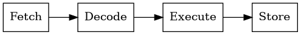
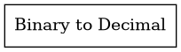
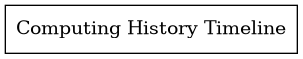

1️⃣ Understanding How Computers Work
1.1 What Is a Computer?
A computer is an electronic device that follows a set of instructions (programs) to manipulate data. It consists of hardware (physical components) and software (programs that tell the hardware what to do).
1.2 Core Hardware Components
| Component | Role | Typical Examples |
|---|---|---|
| CPU (Central Processing Unit) | Executes instructions, performs arithmetic & logic | Intel i7, AMD Ryzen, ARM Cortex‑A78 |
| Memory | Temporary storage for data the CPU is actively using | RAM (DDR4/5), ROM (BIOS) |
| Storage | Persistent data storage | HDD, SSD, NVMe |
| Input Devices | Bring data into the computer | Keyboard, mouse, microphone, scanner |
| Output Devices | Present results to the user | Monitor, printer, speakers |
1.3 The Fetch‑Decode‑Execute Cycle
- Fetch – CPU reads the next instruction from memory.
- Decode – The instruction is translated into signals the ALU can understand.
- Execute – The ALU performs the operation (e.g., add, compare).
- Store – Result is written back to memory or a register.
This cycle repeats millions of times per second, enabling all modern software.
2️⃣ A Brief History of Computing
| Era | Milestones | Why It Matters |
|---|---|---|
| Mechanical | Abacus, Slide Rule, Babbage’s Analytical Engine | First attempts at automated calculation |
| Early Electronic | ENIAC, Vacuum‑tube computers | Introduced electronic speed, but were huge and unreliable |
| Transistor & IC | Mainframes → Minicomputers → Microprocessors | Shrunk size, lowered cost, increased reliability |
| Personal Computing | Apple II, IBM PC, GUI era | Brought computers to homes and offices |
| Internet & Mobile | World Wide Web, smartphones, cloud | Shifted focus to connectivity and services |
| Modern Era | Multi‑core CPUs, AI accelerators, edge devices | Emphasis on parallelism, energy efficiency, AI workloads |
Key concepts that emerged:
- Moore’s Law – transistor count doubles roughly every two years.
- Von Neumann Architecture – CPU, memory, I/O unified in a single design.
- Turing Machine – theoretical foundation for what can be computed.
3️⃣ Binary – The Language of Machines
3.1 Why Binary?
- Simplicity: Electronic circuits easily represent two states – 0 (off) and 1 (on).
- Reliability: Binary signals are less prone to noise than analog levels.
- Efficiency: Binary arithmetic maps directly to hardware logic gates.
3.2 Converting Binary → Decimal
Binary 1011 = 1·2³ + 0·2² + 1·2¹ + 1·2⁰ = 8 + 0 + 2 + 1 = 11
Exercise: Convert 11010, 11100, and 100001 to decimal.
3.3 Binary in Real‑World Data
- Text: ASCII/UTF‑8 encodes characters as binary bytes.
- Images: Pixels stored as binary RGB values.
- Audio/Video: Samples represented in binary form.
- Machine Code: CPU instructions are binary patterns.
4️⃣ Algorithms – Step‑by‑Step Problem Solving
4.1 What Is an Algorithm?
A finite, well‑defined sequence of steps that transforms input into output.
Good algorithm traits:
- Finite: Terminates after a limited number of steps.
- Unambiguous: Each step is clear.
- Effective: Operations are simple enough for a computer.
4.2 Design Strategies
| Strategy | When to Use | Example |
|---|---|---|
| Brute Force | Small input space, easy to implement | Linear search |
| Divide & Conquer | Problems that can be split recursively | Merge sort |
| Greedy | Local optimum leads to global optimum | Dijkstra’s shortest path |
| Dynamic Programming | Overlapping sub‑problems, optimal substructure | Fibonacci memoization |
4.3 Mini‑Lab: Linear Search (Python & JavaScript)
# linear_search.py
def linear_search(arr, target):
for i, val in enumerate(arr):
if val == target:
return i
return -1
// linearSearch.js
function linearSearch(arr, target) {
for (let i = 0; i < arr.length; i++) {
if (arr[i] === target) return i;
}
return -1;
}
Run both on an array of 10 000 random numbers and note the linear growth of runtime.
5️⃣ Big‑O Notation – A Light Introduction
| Complexity | Description | Typical Example |
|---|---|---|
| O(1) | Constant time – independent of input size | Accessing an array element by index |
| O(log n) | Logarithmic – halves the problem each step | Binary search |
| O(n) | Linear – scans every element once | Linear search |
| O(n log n) | Linearithmic – divide & conquer sorts | |
| O(n²) | Quadratic – nested loops | |
| O(2ⁿ) | Exponential – brute‑force combinatorial |
Why it matters: Guides the choice of data structures and algorithms early on.
6️⃣ Coding Style & Debugging Basics
| Language | Style Guide | Quick Debug Tool |
|---|---|---|
| Python | PEP‑8 (flake8, black) |
print() or pdb.set_trace() |
| JavaScript | ESLint (Airbnb) | console.log() or Chrome DevTools |
| C/C++ | Google C++ Style | printf() or gdb |
Tips:
- Keep functions short (≤ 30 lines).
- Name variables descriptively.
- Write a tiny unit test after each function (
assertin Python,jestin JS). - Use a debugger to step through complex logic.
7️⃣ Visual Aids



8️⃣ Glossary (Quick Reference)
| Term | Definition |
|---|---|
| CPU | Central Processing Unit – the “brain” of the computer. |
| RAM | Random‑Access Memory – volatile storage for active data. |
| ROM | Read‑Only Memory – non‑volatile firmware. |
| Algorithm | Step‑by‑step procedure to solve a problem. |
| Big‑O | Notation describing how runtime or space grows with input size. |
| Binary | Base‑2 number system using only 0 and 1. |
| Fetch‑Decode‑Execute | Core CPU cycle that processes instructions. |
9️⃣ Practice Exercises
9.1 Computer Basics
- Draw a diagram showing the relationship between CPU, RAM, and Storage.
- Convert the binary numbers 1010, 1111, 10000 to decimal.
- Explain why computers use binary instead of decimal.
9.2 Algorithms
- Write an algorithm (pseudocode) to compute the sum of all even numbers in a list.
- Create a flowchart for a simple login process.
- Implement a linear search in both Python and JavaScript (see Lab above).
9.3 Data Structures
- Implement a stack using a Python list.
- Write a function that reverses a queue.
- Compare the performance of arrays vs. lists for insertion at the front.
🔑 Key Takeaways
- A computer is a combination of hardware and software that follows the fetch‑decode‑execute cycle.
- Binary is the fundamental language of machines; everything (text, images, sound) is ultimately binary.
- Algorithms are precise step‑by‑step instructions; choosing the right design strategy matters.
- Big‑O helps you reason about efficiency before you write code.
- Good coding style and debugging habits save time and reduce bugs.
- Understanding the history gives context for why modern computers look the way they do.
End of Module 1
Expanded Content
In‑Depth Overview
This module provides a comprehensive deep‑dive into the subject, covering theoretical foundations, practical implementations, and industry‑standard best practices.
Detailed Topics
- Core concepts with formal definitions and mathematical underpinnings where applicable.
- Real‑world use‑cases and case studies.
- Comparative analysis of alternative approaches and trade‑offs.
Hands‑On Labs
- Lab 1: Implement a reference solution from scratch, focusing on clean architecture and testability.
- Lab 2: Extend the solution with advanced features, optimizing for performance and scalability.
- Lab 3: Deploy the solution using CI/CD pipelines and containerization.
Advanced Topics
- Performance profiling and optimization techniques.
- Security considerations and threat modeling.
- Integration with cloud services and orchestration tools.
Further Reading
- Authoritative textbooks, research papers, and official documentation links.
- Community resources, tutorials, and open‑source projects.
Summary & Takeaways
A concise recap of key points, best‑practice guidelines, and next‑step recommendations for continued learning.